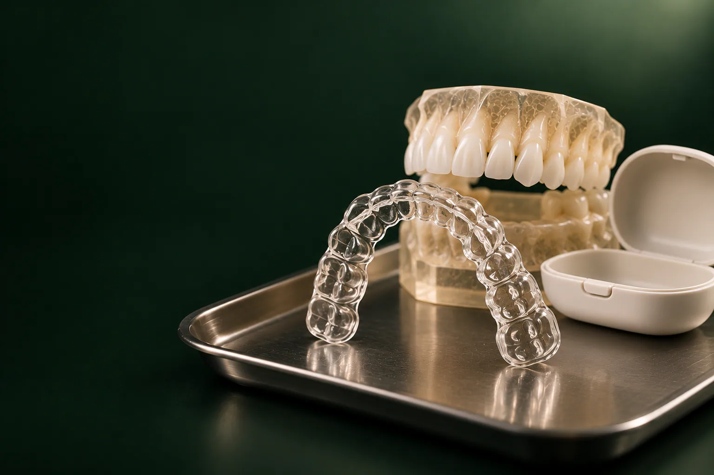

Каштанова Екатерина Константиновна
Терапевт, ортодонт
Эстетическая реставрация и прикус
Записаться к врачу
Элайнеры: это съёмные прозрачные капы, которые постепенно выравнивают зубной ряд без замков и металлических дуг.
Имеются противопоказания. Необходима консультация специалиста.
В стоматологии «Умная Медицина» в пос. Удельная (Раменский округ) курс по системе FLEXILIGNER стоит от 215 000 ₽, STARSMILE: от 290 400 ₽, EUROKAPPA, от 295 000 ₽. Лечение планирует и ведёт врач-ортодонт Каштанова Екатерина Константиновна. Начать стоит с консультации ортодонта, 1 700 ₽: врач осмотрит прикус и скажет, подходит ли вам лечение капами или эффективнее будет другой метод.
Цена курса зависит от системы и от объёма коррекции: чем больше нужно переместить зубы, тем больше этапов и кап в наборе. Кроме самого курса, на старте понадобятся консультация и снимки, а после окончания: удерживающий аппарат, который сохраняет результат. Точную сумму врач называет, когда план лечения уже рассчитан и понятно, сколько кап потребуется.
Цены «от»: минимальные, окончательная стоимость зависит от клинической ситуации. Цены актуальны на 18.10.2026. Стоимость других услуг: на странице цены.
Что входит в курс и итоговую сумму, врач запишет в план лечения до начала работы.
Элайнер: тонкая прозрачная капа из медицинского полимера, которая плотно облегает зубы. Курс состоит не из одной капы, а из серии: каждая следующая чуть-чуть отличается от предыдущей. Надетая капа мягко и постоянно давит на зубы в заданном направлении, костная ткань вокруг корней постепенно перестраивается, и зуб смещается на небольшое расстояние. Когда зубы «дошли» до формы текущей капы, вы переходите к следующей, и так шаг за шагом до запланированного положения.
Чтобы капа могла повернуть зуб, выдвинуть или наклонить его, на отдельные зубы иногда фиксируют аттачменты: маленькие выступы из композита в цвет эмали. Они служат опорой, за которую «цепляется» капа. После окончания лечения аттачменты снимают, а поверхность зуба полируют. Нужны ли они в вашем случае и на какие зубы, определяется при планировании.
Как выглядят капы на зубах? Это тонкая прозрачная оболочка по форме зубного ряда. Со стороны она малозаметна: зубы выглядят чуть более глянцевыми, а аттачменты в цвет эмали почти не видны.
В клинике проводят лечение по трём системам прозрачных кап:
Принцип у всех одинаковый: по цифровой модели зубов рассчитывается серия кап, которые меняют по графику. Отличаются системы стоимостью и деталями производства и планирования. Какую выбрать, ортодонт обсуждает с вами после диагностики: учитывает, насколько сложное перемещение предстоит, сколько этапов понадобится и какой бюджет для вас комфортен. Если капы в вашей ситуации не дадут нужного результата, врач скажет об этом сразу и предложит другой вариант.
Лечение капами рассматривают, когда нужно:
Капы удобны взрослым, которые не хотят носить заметную конструкцию или часто выступают публично.
Капы подходят не всем. Несъёмную систему чаще выбирают при сложных аномалиях, когда зубы нужно переместить на большое расстояние, при выраженных нарушениях смыкания челюстей и в ситуациях, где важна постоянная сила без перерывов. Ещё одно условие, дисциплина: если вы понимаете, что не сможете носить капы почти весь день, результат будет хуже запланированного. В таких случаях обсудите с врачом брекеты.
Перед началом лечения нужно вылечить кариес и воспаление дёсен: под капой зубы хуже омываются слюной, и незалеченный очаг будет развиваться быстрее. Если такие проблемы есть, их вносят в план: например, лечение кариеса от 4 000 ₽.
Капы работают только тогда, когда они на зубах. Поэтому их носят большую часть суток: как правило, около 22 часов, снимая лишь на еду и чистку зубов; точный режим назначит врач. Несколько простых правил:
В первые дни после новой капы зубы ощущают давление, могут слегка ныть при жевании: это признак того, что капа работает, и обычно проходит за пару дней. Первое время может немного меняться дикция, пока язык привыкает. Острая боль, натирание десны или трещина на капе: повод показаться ортодонту.
Капы промывают прохладной водой и чистят мягкой щёткой без абразивной пасты: горячая вода может деформировать полимер, и капа перестанет плотно садиться. Зубы чистят утром, вечером и после каждой еды, межзубные промежутки: нитью или ирригатором.
Раз в несколько месяцев полезно проходить профессиональную гигиену: она убирает налёт, который не снимается щёткой, в том числе вокруг аттачментов. Если вы хотите сделать эмаль светлее, обсудите с врачом, на каком этапе уместно отбеливание зубов.
Оба метода перемещают зубы, но по-разному встраиваются в повседневную жизнь.
Подробнее о брекет-системах Damon и 3M: на странице брекеты, обо всех методах исправления прикуса, в разделе ортодонтия.
Когда последняя капа отработала, зубы ещё не закрепились в новом положении: связки вокруг корней «помнят» прежнее расположение и тянут зубы назад. Поэтому за активным этапом обязательно следует ретенционный: без него результат может частично вернуться к исходному.
Для удержания используют:
Ретейнер стоит 11 000 ₽; итоговую сумму ретенции для вашего случая врач назовёт заранее. Нередко врач сочетает оба варианта. Сколько носить удерживающий аппарат и по какой схеме, определяет ортодонт. Подробнее: на странице ретейнеры.
Срок зависит от исходного положения зубов, выбранной системы, числа этапов и того, насколько точно вы соблюдаете режим ношения. Небольшую коррекцию проводят быстрее, при выраженной скученности или нарушениях прикуса лечение продолжается дольше. Сроки зависят от ситуации; точный график врач распишет в плане лечения после расчёта цифровой модели.
Если перед лечением нужно вылечить зубы, удалить зуб или после выравнивания поставить коронки, к работе подключаются другие специалисты клиники. Все врачи: в разделе врачи.
Терапевт, ортодонт
Эстетическая реставрация и прикус
Записаться к врачуОтзывы о клинике и врачах: на ПроДокторов, Яндекс Картах и 2ГИС.
Зависит от вашего прикуса и образа жизни. Капы малозаметны, снимаются на еду и упрощают гигиену, но требуют носить их почти весь день. Брекеты работают постоянно и подходят для большинства случаев, включая сложные. Окончательную рекомендацию ортодонт даёт после осмотра, снимков и цифровой модели.
Это прозрачная съёмная капа, изготовленная по цифровой модели ваших зубов. Курс состоит из серии таких кап: каждая немного сдвигает зубы, и вместе они переводят зубной ряд в запланированное положение.
Курс FLEXILIGNER, от 215 000 ₽, STARSMILE, от 290 400 ₽, EUROKAPPA, от 295 000 ₽. Отдельно оплачиваются консультация ортодонта (1 700 ₽), снимки и ретенционная каппа или ретейнер. Итоговую сумму врач называет после расчёта плана.
Большую часть суток: обычно около 22 часов. Снимают их только на время еды и чистки зубов. Если носить капы меньше, зубы не успевают переместиться, и сроки лечения растягиваются.
Острой боли быть не должно. В первые дни после смены капы ощущается давление и лёгкая ноющая чувствительность при жевании: так зубы реагируют на нагрузку. Если капа натирает десну или появилась сильная боль, покажитесь ортодонту.
Да, это возможно: например, если после снятия брекет-системы зубы начали смещаться или нужно доработать положение отдельных зубов. Решение врач принимает после осмотра и новой цифровой модели.
Цель лечения: ровный зубной ряд и правильное смыкание, которые заложены в цифровом плане. Аттачменты после лечения снимают, эмаль полируют. Чтобы результат сохранился, важно соблюдать ретенционный этап.
Да. Без удерживающего аппарата зубы могут постепенно вернуться к исходному положению. Используют ретенционную каппу (от 7 500 ₽ для взрослых) или ретейнер (11 000 ₽), схему ношения назначает врач.
Детям в период смены зубов чаще назначают пластинки и расширяющие аппараты: о них рассказано в разделе ортодонтия. Возможность лечения капами у подростков врач оценивает индивидуально.
Все три системы работают по одному принципу и различаются стоимостью и деталями планирования. Ортодонт подскажет, какая подойдёт для вашего случая и бюджета, после диагностики.
Запишитесь на консультацию: план лечения с ценой по этапам
Имеются противопоказания. Необходима консультация специалиста.
Адрес клиники: Московская обл., Раменский округ, пос. Удельная, ул. Громова, 10/2. Клиника рядом с Жуковским; по соседству Малаховка, Быково, Ильинский, Родники, Островцы, Красково и Октябрьский. Пациенты приезжают и из Люберец, Раменского и Балашихи.
На машине: из Жуковского через Быково, без выезда в Москву. У клиники есть бесплатная парковка.
На МЦД-3: до станции Удельная, от неё пешком до клиники. Из Жуковского: от станции Отдых три остановки без пересадок (Ильинская, Быково, Удельная).
За время лечения капами придётся несколько раз прийти на контроль и за новыми наборами, поэтому удобная дорога до клиники экономит время.
Подробнее о клинике: на странице стоматология в Удельной.
Имеются противопоказания. Необходима консультация специалиста.
пгт Удельная, Раменский округ, рядом с Жуковским.
Ежедневно с 9:00 до 21:00
+7 495 150-36-15К нам ездят из Жуковского, Раменского, Быкова, Ильинского, Красково, Малаховки, Островцов, Люберец и Балашихи.
Перезвоним за 5 минут, подберём врача и удобное время.
Оставьте номер, администратор перезвонит и ответит на вопросы.
Подойдёт КТ, панорама, прицельный снимок или фото плана лечения из другой клиники. Врач посмотрит и ответит в течение рабочего дня. Это бесплатно.
Хирург, ортопед и терапевт осмотрят вас вместе, сделаем КТ. Консультация бесплатная, если остаётесь на лечение. Стоимость лечения врач назовёт после осмотра.
Консультацию ведут вместе
 ХирургМихаил
ХирургМихаил ОртопедЕвгений
ОртопедЕвгений ТерапевтАртём
ТерапевтАртёмПервый визит 0 ₽, если остаётесь на лечение
Хирург, ортопед и терапевт посмотрят ваш случай вместе и предложат два-три варианта с ценой. Оставьте номер, администратор перезвонит и подберёт время.
Скидка 10% на лечение, если оплатить его в день консультации
Перезвоним за 5 минут, ежедневно с 9:00 до 21:00.
Администратор перезвонит за 5 минут с номера +7 495 150-36-15.
Это демонстрация: на рабочем сайте заявка уйдёт в amoCRM с названием формы, поводом, страницей и UTM-метками.